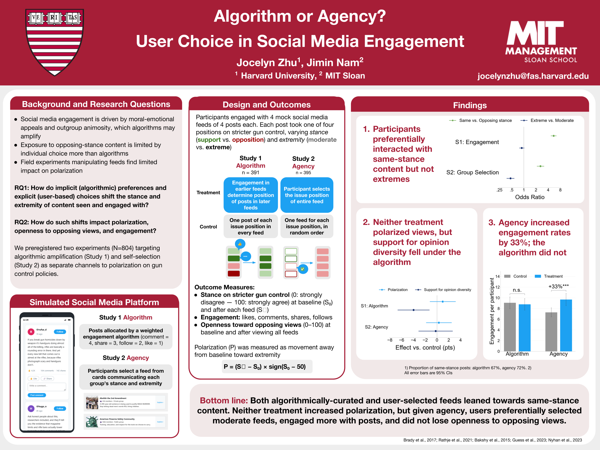

SJDM 2026 · Poster
Algorithm or Agency? User Choice in Social Media Engagement

Click to view at full size.
Summary
Compared to recommendation algorithms, giving users control over what they view raises social media engagement while preserving political tolerance. In two preregistered experiments (N=804), participants explored mock feeds on gun control either under a recommendation algorithm or free choice of feed content. Across both, participants preferentially interacted with same-stance content (2-5x opposing) while avoiding extreme content (0.3-0.8x moderate). Support for opinion diversity fell (-4.0 pp) under the algorithm but remained stable under free choice. Conversely, free choice increased interactions by roughly 30% while the algorithm did not. Neither treatment produced issue polarization.
Preregistration
References
- Bakshy, E., Messing, S., & Adamic, L. A. (2015). Exposure to ideologically diverse news and opinion on Facebook. Science, 348(6239), 1130–1132. https://doi.org/10.1126/science.aaa1160
- Brady, W. J., Wills, J. A., Jost, J. T., Tucker, J. A., & Van Bavel, J. J. (2017). Emotion shapes the diffusion of moralized content in social networks. Proceedings of the National Academy of Sciences, 114(28), 7313–7318. https://doi.org/10.1073/pnas.1618923114
- Guess, A. M., Malhotra, N., Pan, J., Barberá, P., Allcott, H., Brown, T., Crespo-Tenorio, A., Dimmery, D., Freelon, D., Gentzkow, M., González-Bailón, S., Kennedy, E., Kim, Y. M., Lazer, D., Moehler, D., Nyhan, B., Velasco Rivera, C., Settle, J., Thomas, D. R., . . . Tucker, J. A. (2023). How do social media feed algorithms affect attitudes and behavior in an election campaign? Science, 381(6656), 398–404. https://doi.org/10.1126/science.abp9364
- Nyhan, B., Settle, J., Thorson, E., Wojcieszak, M., Barberá, P., Chen, A. Y., Allcott, H., Brown, T., Crespo-Tenorio, A., Dimmery, D., Freelon, D., Gentzkow, M., González-Bailón, S., Guess, A. M., Kennedy, E., Kim, Y. M., Lazer, D., Malhotra, N., Moehler, D., . . . Tucker, J. A. (2023). Like-minded sources on Facebook are prevalent but not polarizing. Nature, 620(7972), 137–144. https://doi.org/10.1038/s41586-023-06297-w
- Rathje, S., Van Bavel, J. J., & van der Linden, S. (2021). Out-group animosity drives engagement on social media. Proceedings of the National Academy of Sciences, 118(26), Article e2024292118. https://doi.org/10.1073/pnas.2024292118